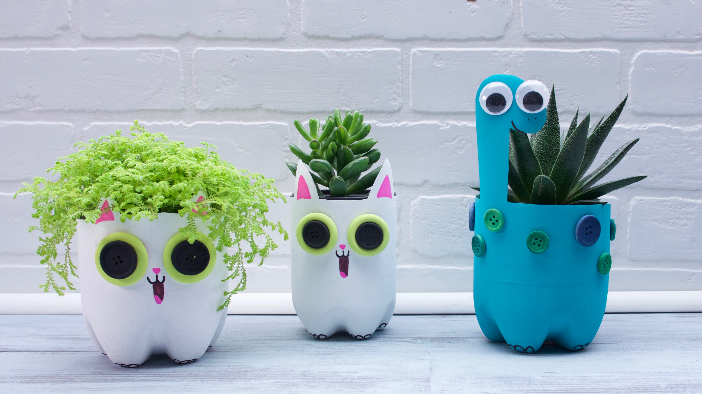
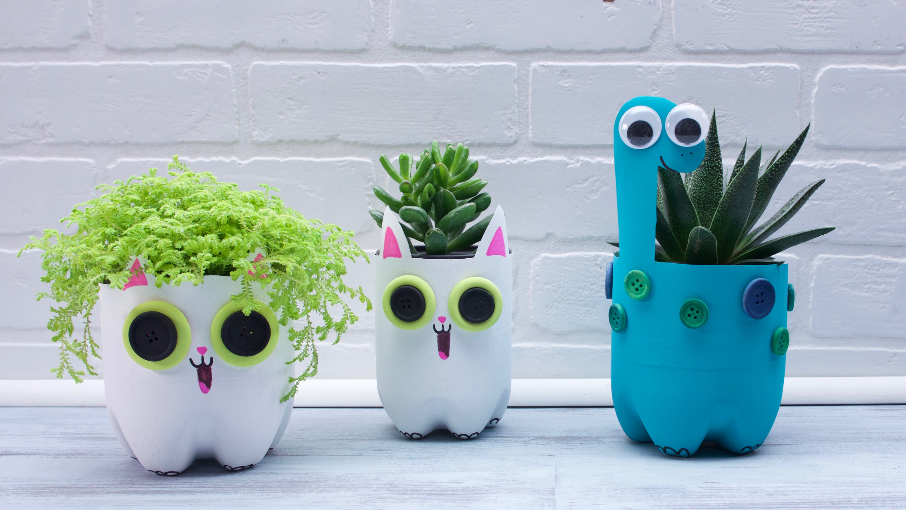

¿Como reciclar desde mi casa?
En la actualidad, la manera más conocida de reciclar plástico es depositando los desechos de este material en el contenedor amarillo. Una vez aquí, los responsables de su manipulación se encargarán de recoger los desechos para llevarlos a un centro de reciclaje especializado.
Sin embargo, existen otras formas en las que puedes hacerlo desde casa.
¡Permitenos mostrarte como!
5 ideas para reciclar plástico en casa
El tiempo de degradación del plástico oscila entre los 200 y los 1000 años dependiendo del tipo. Por esta razón reutilizar la mayor parte es beneficioso ya que se evita su degradación en microplásticos que después puede comer por accidente el pescado que acaba en nuestra mesa. Estas características pueden resultarnos muy útiles también a la hora de darle una segunda vida como maceta, por ejemplo. Bastará con recortar un trozo de la botella, llenarla de tierra y plantar tu especie favorita. También se pueden unir varias botellas para crear un original jardín vertical.
Para reducir la cantidad de residuos plásticos, podemos optar por reconvertir los tapones de las botellas en nuevos objetos, como por ejemplo posavasos, mosaicos, cestas o broches. Para transformarlos en un material nuevo bastará con cubrir los tapones con papel de horno y aplicar calor con la plancha. Si se colocan varios tapones juntos al realizar esta operación quedarán pegados unos a otros. Ten mucho cuidado de no quemarte y realiza la actividad con máxima precaución.
La concienciación para reciclar plástico en casa a través de campañas que se centran en la reducción de bolsas de plástico tienen una gran acogida, pero no se puede conseguir de la noche a la mañana una desaparición completa de este artículo. De hecho, se calcula que en todo el mundo se malgastan 200.000 por segundo. Teniendo en cuenta que tardan 700 años en descomponerse, podemos hacernos una idea de la importancia que tiene reciclar bolsas o reciclar recipientes de plástico de otro tipo.
Puedes poner en marcha un taller de manualidades con doble función: reciclar plástico en casa y concienciar a los más pequeños sobre la contaminación. Si además les proponemos crear figuras de animales a partir de estos materiales estaremos contribuyendo a despertar su curiosidad sobre el medioambiente y a estimular su imaginación.
Los envases de detergente suelen fabricarse con polietileno, un plástico de alta densidad y dureza. Gracias a estas características es un material perfecto para construir juguetes seguros y duraderos. Camiones, guitarras o casas de muñecas son algunos de los ejemplos que podemos proponerles a los más pequeños de la casa para que aprendan la importancia del reciclaje mientras se divierten creando sus propios juguetes.


 
